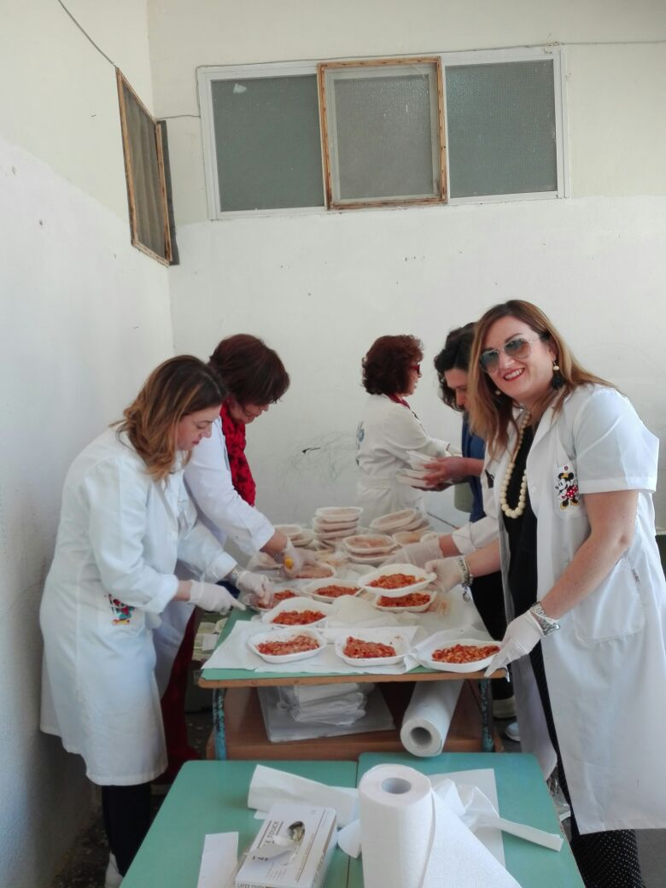
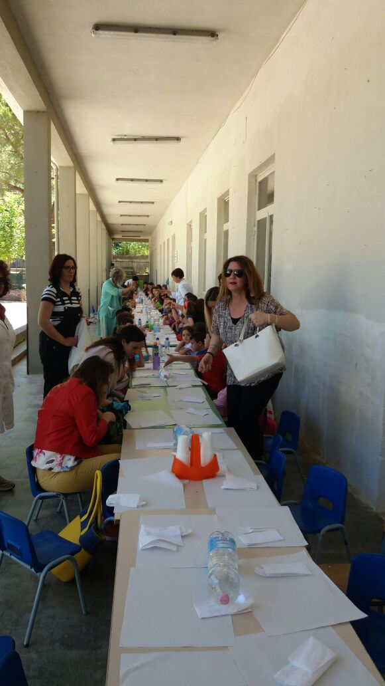
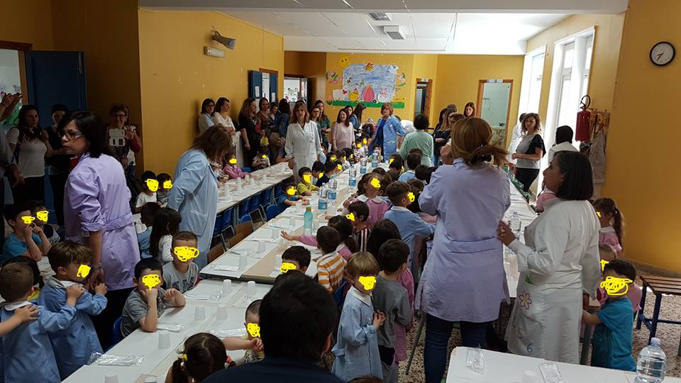
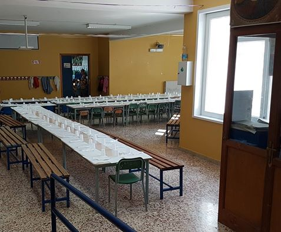
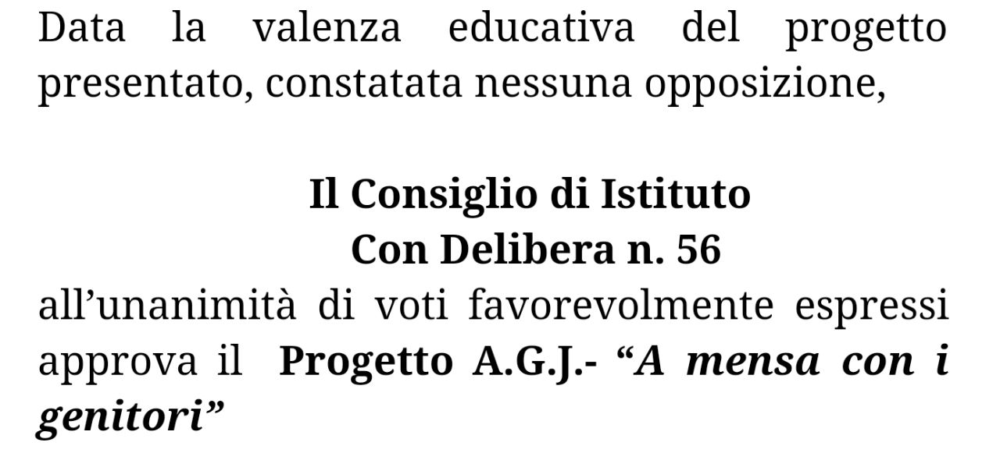

A Mensa con i genitori
Il 17 e il 24 Maggio 2017 condividiamo il pasto con i nostri figli
NEWS!: Comunicato del 24/05/2017
Un altro momento di condivisione tra genitori, bimbi, insegnanti, operatori scolastici e comunali! Il momento del pranzo dei nostri figli, oltre che un evento conviviale, un momento educativo.
Oggi 24 maggio 2017 si è realizzata la seconda parte del progetto "a mensa con i genitori" promosso dall AGJ e svoltosi presso i locali della Villa Sacro Cuore, che attualmente ospita la scuola materna Rodari.
Un ringraziamento particolare per la buona riuscita dell evento va alle nostre rappresentanti di classe, senza il loro prezioso contributo nulla si sarebbe potuto realizzare, alle mamme ed ai papà che sono intervenuti.
Grazie ai collaboratori scolastici Salvatore Lo Giudice, Giuseppa Mangiafreno e alla collaboratrice comunale Sig.ra Mariella Ales, che si sono adoperati per la buona riuscita del momento del pasto e non solo.
Un grazie speciale lo dobbiamo alle insegnanti, in particolare nella figura della responsabile Saveria Marinoche e tutto lo staff sempre collaborativo.
Un ringraziamento va al nostro consulente informatico Giuseppe Ragusa che con grande disponibilità e professionalità ci consente di essere tutti contemporaneamente parte attiva di un sistema scolastico e sociale la cui forza è la volonta di un cambiamento reale.
L'Associazione AGJ nelle figure del Presidente, del Vice Presidente, del Tesoriere e della Segretaria e di tutti i membri del Direttivo sono liete di aver portato avanti questo progetto che sicuramente sarà il primo di una serie di proposte che l'associazione intende proporre alle scuole di ogni ordine e grado per favorire la partecipazione attiva di tutti al bene della scuola, il futuro dei nostri figli.
E infine grazie anche alla Royal pasti ed a Luciana Genovese, che con grande disponibilita ha sempre cercato di andare incontro alle esigenze di tutti.
 
NEWS!: Comunicato del 17/05/2017
Oggi, con il progetto "A mensa con i genitori", AGJ ha voluto fare in modo che i genitori condividessero un momento fondamentale della vita dei propri bambini, "la mensa scolastica", e fare festa insieme a loro. Si ringrazia la Dottoressa Maria Mirto, biologa e nutrizionista, che ha sottolineato l'importanza della sana alimentazione nella vita dei bambini! Si ringraziano le insegnanti, gli operatori scolastici, i genitori e la Royal pasti che hanno dato il massimo affinché tutto andasse per il meglio.
Questo valorizza il rapporto tra la scuola e la famiglia e testimonia che con il lavoro di squadra si possono portare avanti dei progetti importanti come una mensa scolastica.
La prossima giornata avverrà presso Villa Sacro Cuore (plesso Rodari) il 24 maggio e sicuramente, facendo tesoro di tutti i consigli ricevuti, troveremo gli spunti per fare ancora meglio.
 
Finalità del progetto:
il progetto ha lo scopo di coinvolgere i genitori nella vita della scuola materna attraverso la
condivisione di un momento fondamentale della giornata come quello della consumazione del
pasto della mensa, con lo scopo di fare acquisire una sempre maggiore consapevolezza del ruolo
che i genitori devono avere nella vita della Nostra scuola anche al fine di sollecitarne una sempre
maggiore e più attiva partecipazione.
Nel contempo il progetto ha lo scopo di valorizzare un
fondamentale aspetto della vita scolastica delle classi materne quale momento educativo ed
occasione di benessere e positività.
Il pranzo condiviso non vorrà essere soltanto un momento
conviviale e di festa, ma anche un momento educativo sotto il profilo nutrizionale.
Approvazione del progetto da parte del Consiglio di Istituto:
Il Progetto è stato presentato al Consiglio di Istituto e da questi approvato con apposita delibera di cui si riporta un estratto.

Soggetti coinvolti:
Genitori: che verranno coinvolti in tutti gli aspetti esecutivi del servizio mensa, come l’accoglienza
dei pasti, la suddivisione degli stessi ai bambini, la condivisione del pasto, il riassetto dei locali.
Maestre: svolgeranno le loro funzioni tipiche di erogazione dei pasti (distribuzione dei pasti e
raccolta tickets) ed istruiranno e coordineranno genitori nell’espletamento del servizio mensa.
Bambini della materna: condivideranno il proprio pasto con i genitori e comunque con gli adulti
che interverranno al progetto.
Nutrizionista: spiegherà le scelte alimentari che interessano la mensa scolastica.
Modalità esecutive:
Il progetto prevede la partecipazione dei genitori alla consumazione del pasto erogato dal servizio
mensa gestito dall’AGJ nei locali delle scuole materne dell’Istituto comprensivo.
Nelle settimane precedenti l’evento, l’Agj in occasione della vendita dei tickets per i bambini,
venderà anche i ticket per i genitori, allo stesso costo di 3 euro, fornendo alle responsabili di plesso
i relativi elenchi dei genitori partecipanti, suddivisi per classe.
Nelle giornate prefissate i genitori, che hanno acquistato i relativi ticket, accederanno alle ore
11.30 ai locali delle scuole materne, nelle singole classi di appartenenza dei loro figli.
Sotto la direzione delle operatrici ed insegnanti di classe i genitori collaboreranno alle operazioni di
distribuzione ed erogazione dei pasti ai rispettivi figli, con i quali condivideranno il pasto.
All’esito delle attività di consumazione del pasto, e comunque non oltre le 13.30, i genitori
lasceranno i locali della scuola materna.
Data di esecuzione del progetto:
Plesso Mattarella: Mercoledì 17/05/2017 dalle ore 11.30 circa alle ore 13.30 circa presso i locali della scuola materna
“Mattarella”.
Plesso Rodari: Mercoledì 24/05/2017 dalle ore 11.30 circa alle ore 13.30 presso “Villa sacro Cuore” nei locali dove momentaneamente si trova il plesso Rodari.
Al plesso Mattarella, in atto con problematiche di chiusura parziale di aree del medesimo plesso,
salva diversa indicazione della responsabile di plesso, i pasti in condivisione potranno essere
consumati presso ciascuna classe.
Al plesso “Villa”, salva diversa indicazione della responsabile di plesso, si possono valutare
formule esecutive alternative come la consumazione del pasto nell’area del cortile esterno.